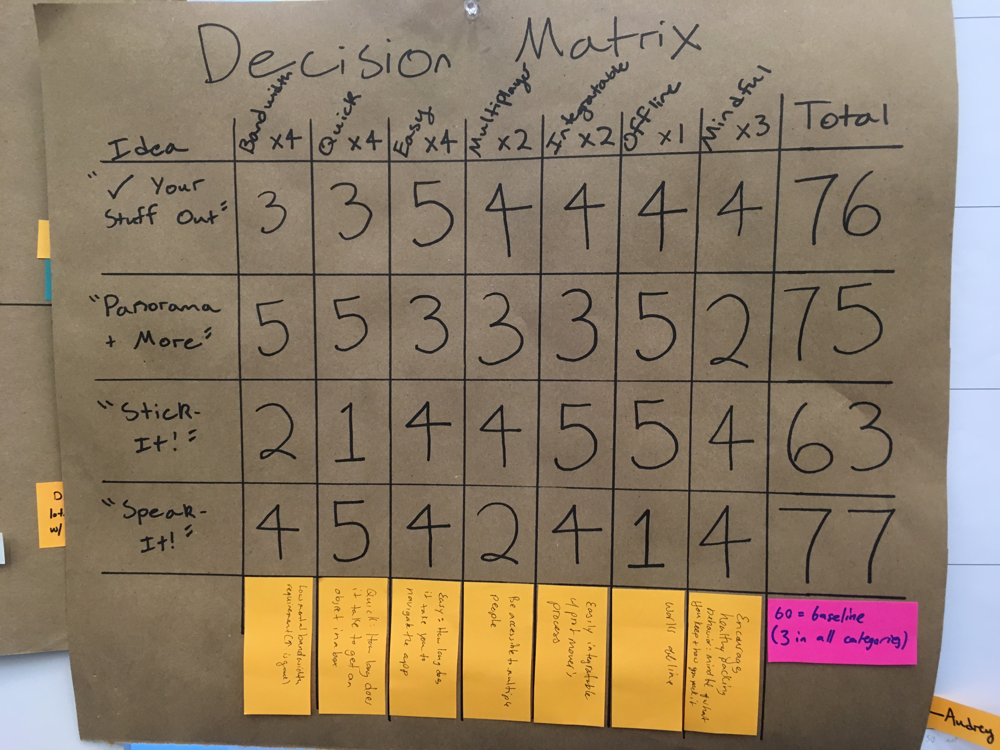

Introduction
Over this design phase, we focused on putting our user needs into designs for our moving application. First, we decided on a direction using a decision matrix. Together, we next made a storyboard of our application experience. Then we worked on making our physical paper prototype using sticky notes, paper, tape, and transparency paper.
We made our first round of our paper prototypes individually. We split up the screen interactions and each took time to make screens that will integrate to make a whole user interaction. The four main parts were 1) take a picture/cut out items 2) place items in boxes 3) search for items/boxes 4) image search for items. During integration, we spent time walking through the items and found many opportunities for improvement. For example, we realized that we needed to implement a back button since Apple phones do not have a back button built in while Android phones do.
The following is a list of the opportunities for improvement that we discovered during integration:
- Having a back button for Apple devices
- A requirement for an edit box button
- ability to add tags and descriptions to boxes
- ability to change box name
- Having single filter options for searching (only looking at boxes or only working on items)
- Once a user has made a cut-out of a picture, an option to undo the cut-out
- An easy way to see what tags are associated with a box
- A need for drop-down icons for box types on the item placement screen
User Needs
In the last phase we identified a list of user needs.
We feel that our current prototype supports the following:- Have a quick and easy way to categorize things
- Must have the right balance of general vs. specific
- Not hamper the professional movers. They have a system, needs and preset systems too
- Work offline
- Organizing. Helping those moving think through the most important items that they need to keep track of and will need on the other end. This includes both items critical to everyday existence and items that items that make a day feel like home.
Our current design is compatible with all of these. In particular we are proud of the picture to box interaction which allows people the flexibility to either document every item in the box or rely on spatial intuition. We know that people associate items with their location in their home, so just knowing the location where a box was packed is a significant help when determining what the box’s entire contents might be.
We also identified organizing as a critical user need. We defined organizing as helping those moving think through the most important items that they need to keep track of and will need on the other end. This includes both items critical to everyday existence and items that items that make a day feel like home. Our tagging and labelling system can be applied well to the multi-part move scenario. Items critical to the portion of the move between packed at one location and unpacked at the other can be denoted in user-specified “critical” boxes. These boxes can, too, be thoroughly documented while those less critical can rely more on spatial intuition.
Our prototype does not easily support:- Accessible to multiple people.
- Integratable with printing on paper, pdf’s
Additionally our solution does not include a mindfulness aspect. We chose not to tackle this as our app interaction is quite nuanced and adding a reflection portion would be feature creep.
Scenarios
We developed the following scenarios during this phase to help us best understand the context of a potential user and their needs:
- Shane “thinks hard” about what stuff he will need and when he will need it over the various stages of his move. His hashtags help with that. He uses: “Interim Travel”, “Montana visit”, “Need immediately in new apartment” instead of “Bed”, “Living” etc. This helps him have what he needs when he needs it, but the simple photo to box interaction doesn’t take up too much time while packing.
- Most of the time Rachel is packing objects located near each other, an action well-supported by our app. At the last stages she locates objects to fit in remaining boxes. She takes a picture of the object as she places it in a box and quickly adds any relevant hashtags.
Our app may be useful to movers who have a moving company but who are still packing a significant portion of their belongings themselves. However, we do not think it is entirely useful to those whose items are entirely packed by a moving company. We had an intuition that this might have been the case as we were developing. Creating a scenario for this user group confirmed our intuition.
Feedback on Paper Prototypes
We held three walkthrough sessions with potential users. During the session, we explained that they were getting ready to move and packing a nearby table. Then we gave them the home screen where they were able to start their interaction. Watch this video of the app experience with our paper prototypes.
The following are the major issues brought up by the interviewees. An example issue would be if they made a mistake because of our design and what their intended goal was:
- Home screen
- It might be helpful to know how big the gallery is
- Taking panorama picture screen
- Tires to group things before a picture
- Not intuitive that the picture is a panorama
- Tired to take a picture of a couple items rather than of the whole table (all three interviewees)
- Taking a picture of a box after it is sealed
- Expected image recognition software to kick in
- Tried to find a redo button
- Putting items into boxes screen
- They wanted to know how many items are in each box/see the items in boxes
- An easy way to go back to the home screen
- An option to click on items
- (Had only one item) confusion of how to navigate items in boxes
- Confusion for how to add more items from the picture
- Search for items screen
- Expected to see box and description open when you click on an item
- Not sure how to view what is in a box
- Looking for a list of items: “Can I just have a lit of all items?”
Some of the key issues we found were around the navigation of putting items into boxes. It was not clearly communicated how to go back to the home screen, cut out more items from the image, or view items in a box. We think adding clear icons for navigation on the items into box screen as well as adding a function accessible on this screen for users to look at items already in boxes. Some of the users we tested with all had an inclination to view the items in a box while in the process of putting items into boxes. Another key insight we gained from testing with users was about their inclination to take pictures of objects rather than of a whole area. In our minds, the panorama part of the app is central to the objective. However, this idea was not conveyed to the user. All of our test users tried to take a picture of a singular block of items rather than of the whole workbench. For the next iteration of our prototype, we need to communicate clearly the benefit of taking a panorama.
Alternative Designs
Leading up to the choice of our current design, our group reflected on insights that we had gained throughout the process of interviewing our potential users. We ultimately had 4 designs that made it to the final design discussion. The first of these was “Check your stuff out!” In this app design, users would need to choose what room items in their box belonged to and would be given a list of potential items that might be in that room based on a library housed in the app. Users would also have the ability to add more items and tap a certain number of times to add a specific quantity of items (e.g. 4 pillows from the bedroom). The second design was “Panorama and More,” which is described in detail above. The third was “Stick it!” which involved users taking pictures and/or listing each of their objects as they went into a certain box before labelling that box with a QR code that could be read by the app. This would be a functionality that we would have expected to be used by movers as well. Finally, we had “Speak it!” which made use of Siri or some other AI on the phone to keep track of what items were going in what box as the user packed them (for example, “Put toothpaste, toilet paper, and bath towel in box 4”).
During our conversations with users, we determined a list of features and elements of the final app that would be important and created a design matrix that weighed these appropriately. Everything got a score of 1-5 in each category of the design matrix where a 5 best suited the users needs.
The category that got the lowest weighting was offline. This meant that we thought it was worth considering whether the app had the ability to function when users did not have an internet connection, but we determined that was not extremely important as most phones have this capability. In this category, “Speak it!” did exceptionally badly in this category, as any form of AI that we could feasibly think of using would require an internet connection to work. The other three app ideas ranged from 4-5, as these all seemed like they would work without a connection.
On the next weighting tier, we had multiplayer (multiple users could interact with the same account, i.e. if users had family/friends helping) and integratable (i.e. the app could either be used by movers or could produce a helpful printable). All of the users we talked to had outside help in some capacity, but 3 of the 5 were ultimately responsible for deciding how boxes were organized. Additionally, each of the users had varied levels of interaction with movers. Therefore, it made sense that these should be slightly more important, but not by much. As far as multiplayer went, “Speak it!” was expected to be most problematic, as multiple people speaking would confuse the AI. The other apps were essentially equal, falling into the range of 3-4. In terms of integrability, the lowest score was a 3, held by “Panorama and more!” since users could be as specific/vague as they wanted to be about what was in each box. The highest score was a 5 for “Stick it!” as the QR code stickers could reasonably be used by the moving company to keep track of what was in each of the boxes and where they needed to go.
On the next tier, we identified mindfulness as a potential feature of the apps. This meant that the process of using the app helped users think through their move with respect to what items to get rid of, how to pack items, etc. This was important to all of our users in some capacity; Ted and Amanda regretted not getting rid of more junk, Rachel kept very good track of what was in all of her boxes, Shane needed to know what objects he would need for a trip pre-move in and what was safe to put in storage, and Eliot needed a way for his parents to communicate what made it into what box when they did his packing for him. We identified “Panorama and more” as the worst in this respect with a score of 2, as the app allowed users to just take pictures of their items rather than listing them out and thinking about whether they really needed the things they were taking. All other app ideas received a 4, as they required some amount of users being aware of what they were packing.
Finally, on our highest tier, we considered the amount of mental bandwidth it took to master the app to use it, how quick it was to use, and the ease with which one could add items to boxes. These are the elements that we found most important based on our user interviews- if an app was difficult to learn or navigate, the user would just opt for their own system. “Stick it!” received the lowest score in both bandwidth and quick, with a 2 and 1 respectively. Based on the way we defined the app, it seemed that this idea would take the most time for users to actually process what was in each box and seemed to be slowed down by the process of obtaining and placing the QR code stickers. “Panorama and more!” did well in both of these categories with 5’s- in theory, it takes little mental bandwidth, as it more or less just requires users take pictures and draw circles, and quickest since a user could pack a box with an identifier of something as simple as a circled dresser. “Speak it!” did well in all 3 of the categories, but received a 5 in quickness, since a user only needs to say what they are putting into a box as they do so. Finally, we decided that “Check your stuff out!” did the best in ease of use, which earned it a 5 in that category.
Based on all of these metrics, we found that the only app idea that definitely did not fit our standards was “Stick it!” This idea only exceeded a theoretical average app by 3 points. The other three apps fell within the 75-77 range, showing that all 3 were strong contenders. We finally chose “Panorama and more!” because it was most likely to help each of us with our own individual learning goals.
Conclusion & Insights
Thinking through the interaction of our prototype in the context of moving gave us some interesting insights into the way people might use the app at the beginning of their packing process vs. at the end. In the beginning, it is easy to fill a box while staying in one location. But at the end, it often becomes a game of finding the last key bit of space for the last few objects. We wanted our prototype to have an easy use for both these methods of packing.
With that said, in the making of our paper prototype, we found that it is easy for feature creep to start, even in a seemingly well-defined idea. What had initially started out as a fairly simple app that only really required taking pictures and drawing circles quickly evolved (for better or worse) into an app that allowed users to apply filters and labels, sometimes down to the level of individual items sitting on a table, which was not our first intention. In the future, we may use confusions our users had with the paper prototypes (and confusions we had in working that prototype around them) to simplify down to something that fits truer to the design insights it had exceeded at in the design matrix- low mental bandwidth, and quick to use.
With all of this said we look forward to the next phase.